Интелкон — редизайн и развитие
PROPTECH-платформы
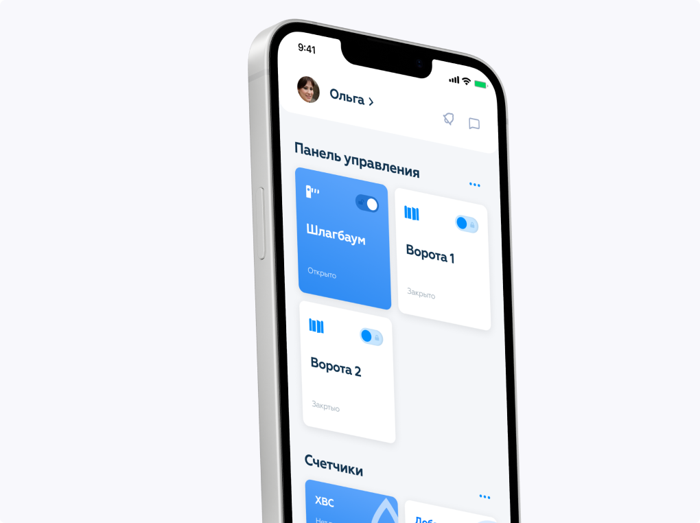
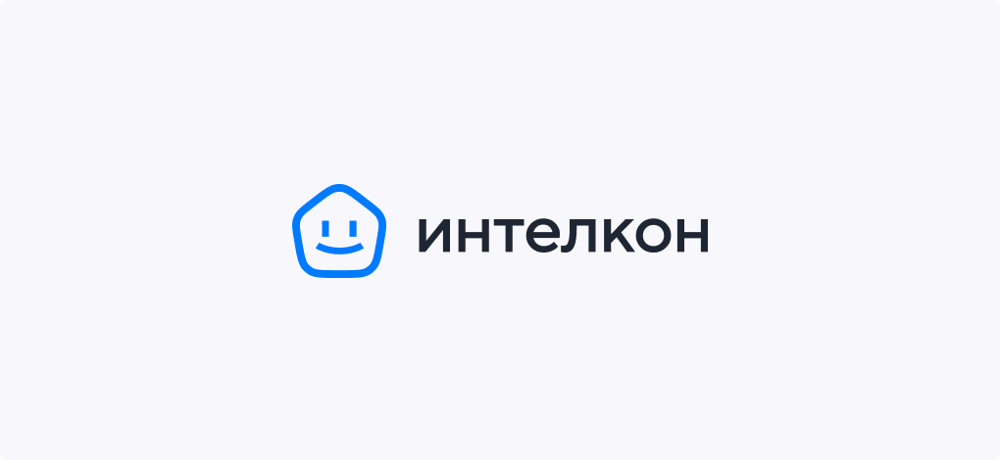
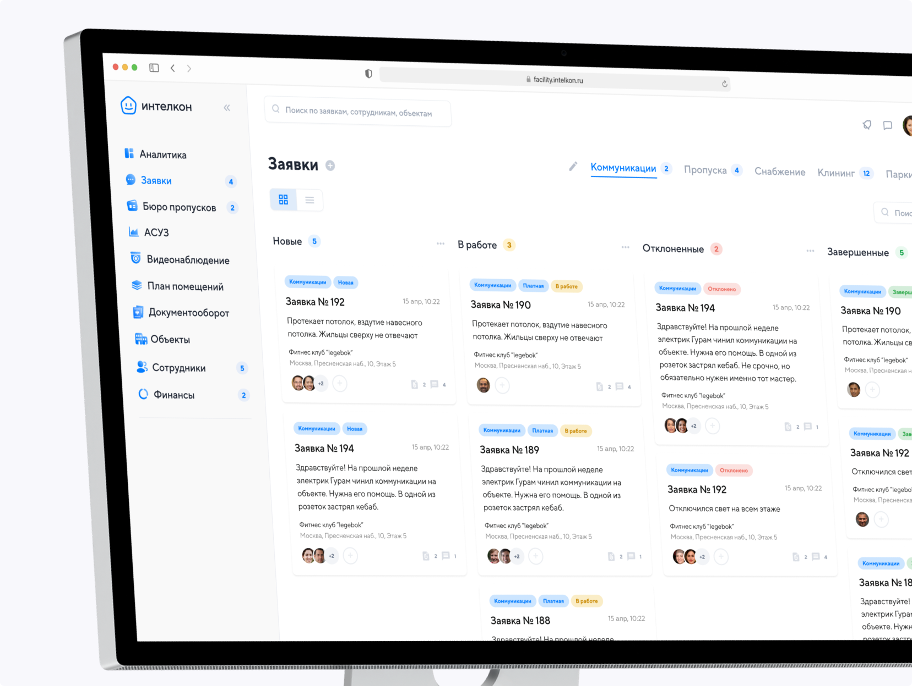
Содержание
О компании
Интелкон — технологическая компания, разрабатывающая комплексные решения для цифровизации жилой инфраструктуры. Основное направление — создание программных платформ и их интеграция в процессы управления объектами на всех этапах жизненного цикла: от эксплуатации до взаимодействия с жильцами.
Помимо разработки ПО, компания занимается внедрением и поддержкой собственных решений, а также интеграцией с инженерной инфраструктурой объектов — системы домофонии, видеонаблюдения, контроля доступа и другие элементы «умного дома».
Решения компании внедрялись в проектах девелоперов, включая ГК «Садовое кольцо» и MR Group. Работа с разными застройщиками предполагает вариативность процессов: различаются модели управления, структура подрядчиков и сценарии эксплуатации.
Контекст задачи
Мне требовалось провести редизайн платформы, не нарушая существующие бизнес-процессы, и пересобрать пользовательский опыт в условиях уже сформированной логики системы.
Десктопной версией платформой пользуются операторы управляющих компаний, подрядные организации, администраторы и жильцы. Операторы обрабатывают заявки, отслеживают статусы и координируют выполнение работ. Подрядчики получают и выполняют заявки, взаимодействуют с управляющими компаниями. Администраторы настраивают систему: управляют компаниями, сотрудниками, услугами и правами доступа. Жильцы используют веб-приложение: создают заявки, заказывают услуги, открывают дверь и просматривают камеры.
Проблема и исследование
Когда я подключился к проекту, бизнес-аналитик и технический писатель уже успели частично описать систему и собрать основные флоу в виде UML-диаграмм. Я включился на этапе проработки: изучил текущий продукт, подключился к глубинным интервью и начал разбирать, как сотрудники реально работают с системой.
Параллельно провёл UX-аудит существующего интерфейса. Анализ показал, что основные проблемы были связаны не с нехваткой функций, а с тем, как они организованы внутри системы.
Основной экран, работа с заявками, представлял собой плотную таблицу с большим количеством столбцов и второстепенных данных. Чтобы понять статус заявки или выполнить действие, пользователю приходилось вручную просматривать строки, переключаться между элементами и открывать дополнительные панели.
Интерфейс требовал постоянного «чтения», не позволяя быстро ориентироваться в потоке задач. Похожие проблемы проявлялись и в других частях системы: видеонаблюдение было представлено в виде однотипной сетки без контекста, коммуникация выглядела как отдельный инструмент без связки с задачами, данные отображались без приоритизации.
Платформы до редизайна и перезапуска
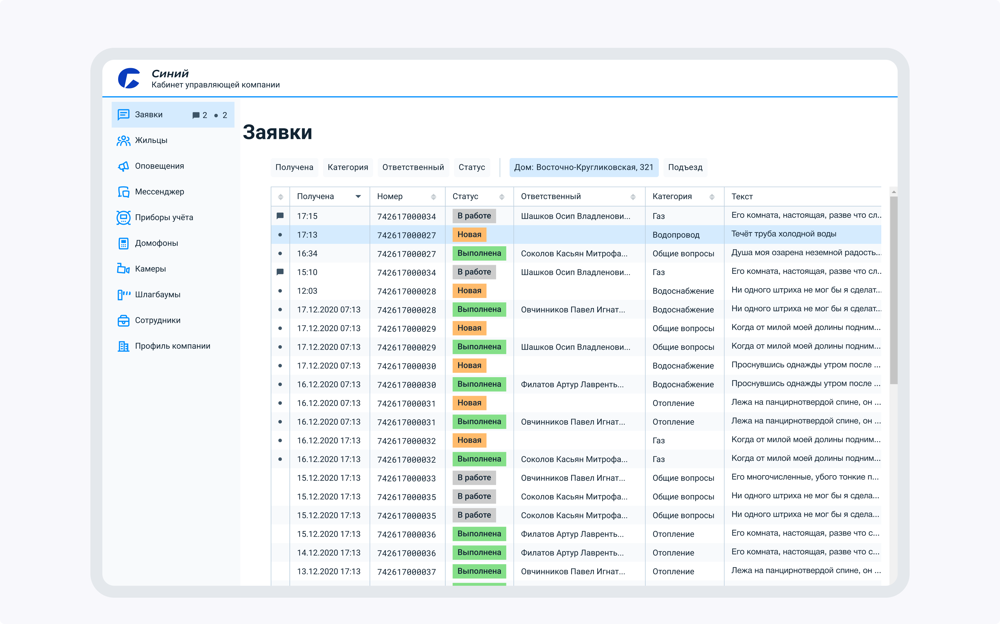
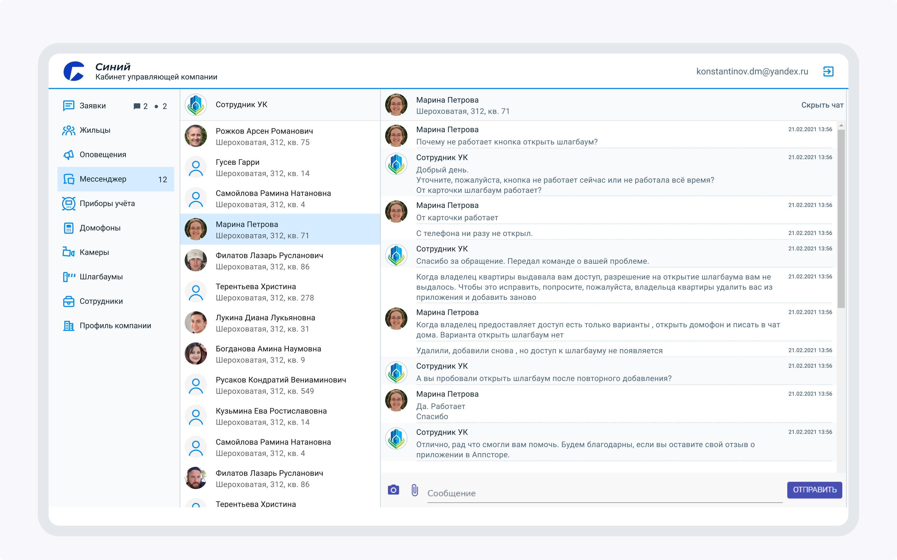
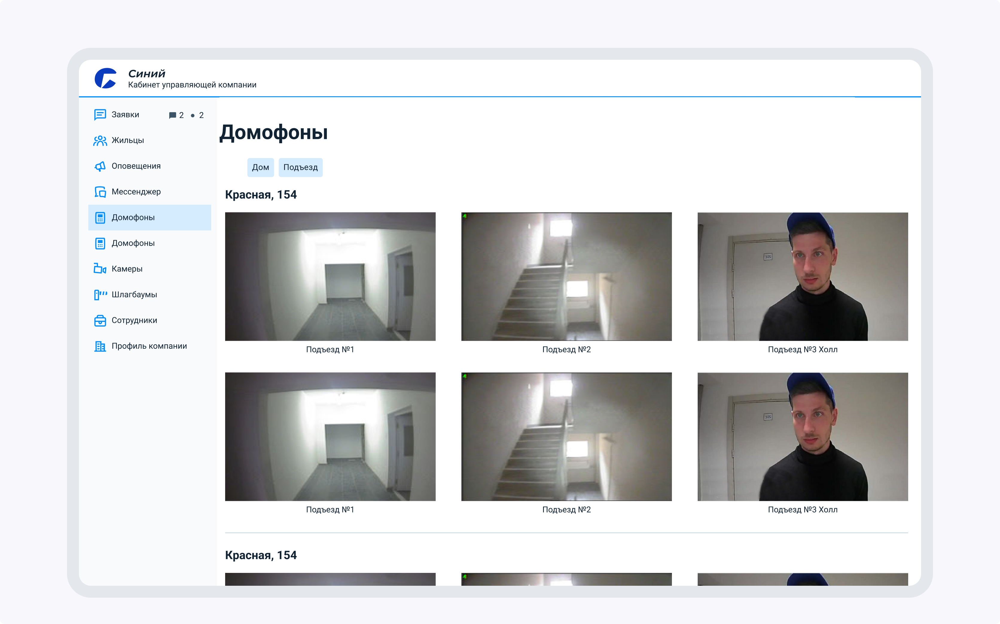
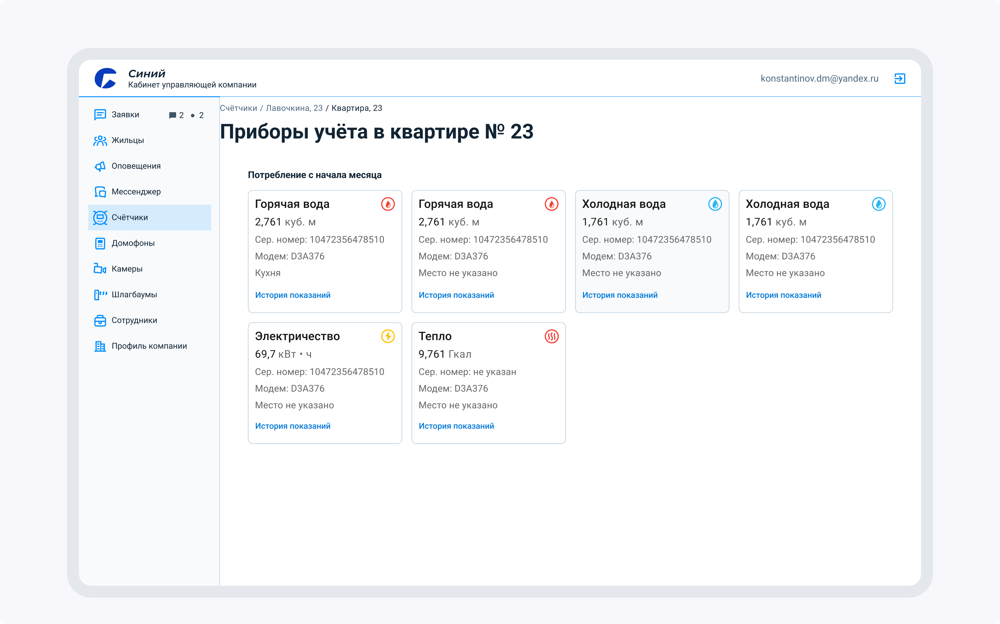
В интервью менеджеры УК довольно точно формулировали главный запрос: «Нужно видеть заявку, назначать исполнителя и передавать её в работу — без лишних таблиц и полей».
Отдельной проблемой было отсутствие мобильного сценария для конечных исполнителей. Заявки распределялись внутри платформы менеджером, но дальше сотрудники «в поле» выпадали из процесса: коммуникация и контроль работ происходили уже через звонки, WhatsApp и личное взаимодействие, а не внутри системы.
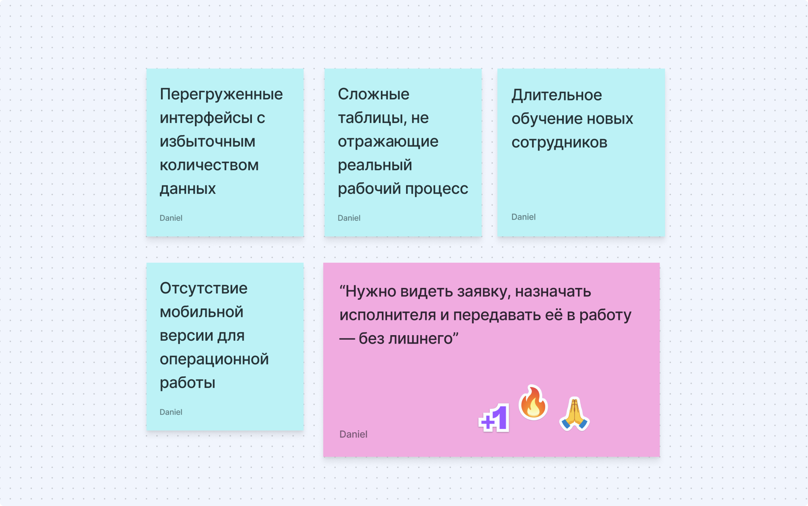
Запуск MVP
Совместно с бизнес-аналитиком мы приоритизировали функционал и определили минимальный набор возможностей для первого запуска. Параллельно я собрал кликабельный low-fidelity прототип, чтобы быстро проверять структуру экранов и пользовательские сценарии.
Фокус был на том, чтобы менеджер совершал минимум действий для выполнения ключевых задач — получить заявку, назначить сотрудника и передать её в работу. Второй важной задачей было встроить в процесс самих исполнителей: дать им простой мобильный сценарий получения заявок, отчётности по работам и перевода задач в статус «выполнено» с фотофиксацией результата.
Поэтому первым этапом решили запускать мобильную версию — именно её не хватало сотрудникам в ежедневной операционной работе. В итоге MVP удалось вывести в прод примерно за месяц. Прототип практически без изменений лёг в основу реализации, что позволило быстро перейти от гипотез к реальному использованию и начать получать живой фидбек от пользователей.
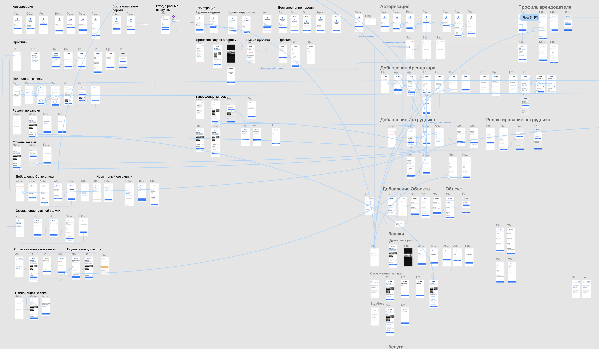
Развитие десктопной версии
Команда постепенно укомплектовывалась, а продукт продолжал развиваться уже поверх работающего MVP. Мы придерживались mobile-first подхода и вместо механического переноса старой системы пересобирали логику взаимодействия, убирали лишние действия и перерабатывали структуру экранов.
Развитие десктопа мы совместили с изначально запланированным редизайном интерфейса. Основной фокус был не на косметическом обновлении UI, а на пересборке пользовательского опыта под растущую сложность продукта.
Работа с заявками
Ключевой сценарий платформы, работа с заявками, в старой версии был завязан на плотных таблицах и плохо отражал сам процесс работы.
В новой версии я пересобрал этот сценарий вокруг потока задач, а не хранения данных. Вместо «реестра заявок» появился jira-подобный интерфейс с kanban-представлением, где заявки визуально разделялись по этапам работы.
Пересобранный kanban и табличный вид заявок
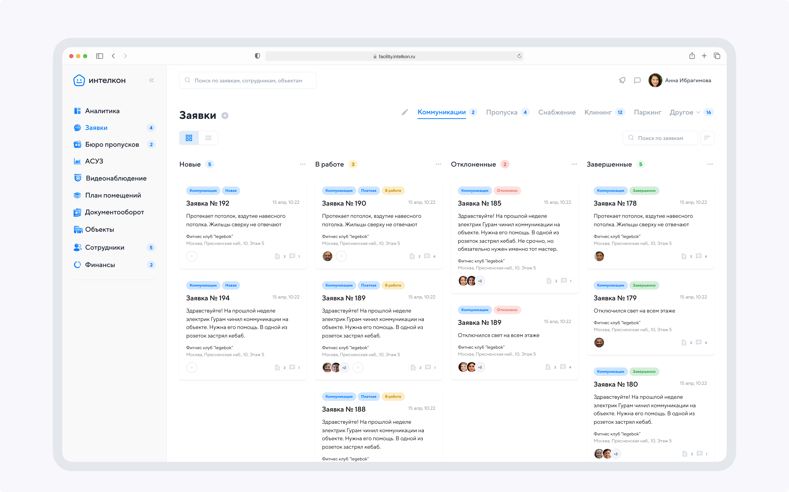
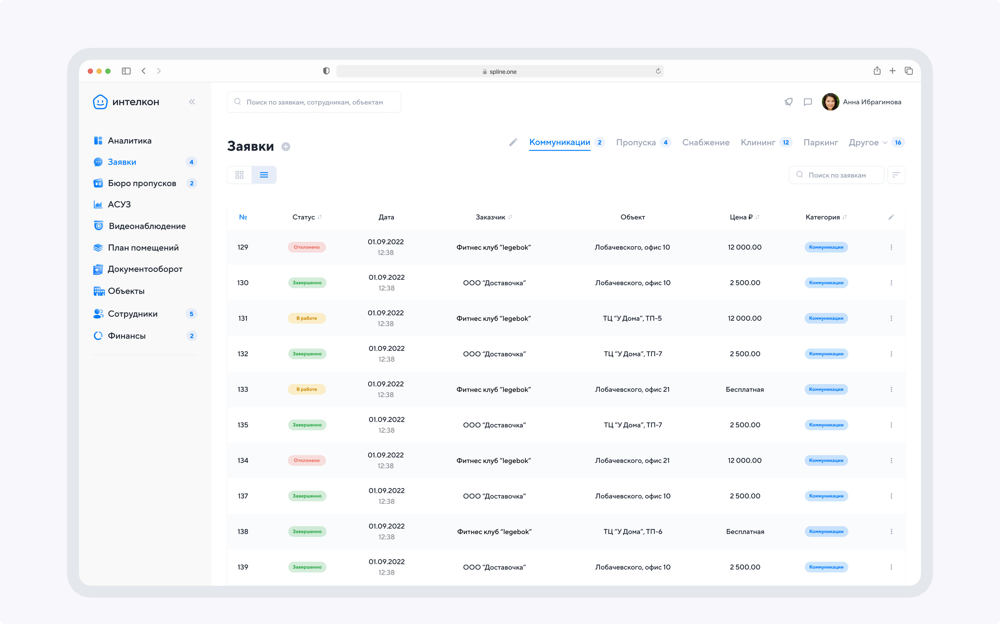
При этом табличный режим сохранился для сценариев, где важны детализация и точность данных.
- быстрее ориентироваться в текущем статусе задач
- упростить распределение между сотрудниками
- сократить количество лишних действий
- снизить нагрузку при работе с большим объёмом заявок
Переработка сервисных разделов
Параллельно перерабатывались и другие части платформы. Раздел видеонаблюдения получил более структурированное отображение камер и контекста объектов. Внутренние чаты перестали быть отдельным инструментом «для переписки» и стали частью рабочих сценариев внутри системы.
Также начал развиваться аналитический блок. Вместо простого мониторинга показаний появились расширенные сценарии аналитики: контроль расходов, эксплуатационных затрат, аренды помещений и работы подрядчиков.
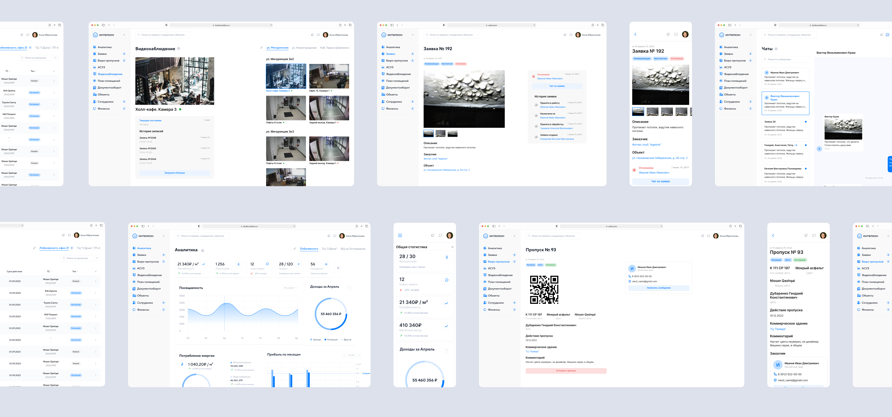
R&D и новые сценарии
С расширением пула клиентов в продукт начали добавляться сценарии, для которых практически не было готовых решений внутри рынка.
Одним из таких направлений стала работа с BIM-моделями и планами помещений внутри интерфейса платформы. Такие функции требовали исследовательского подхода: многие сценарии приходилось проектировать практически с нуля, совместно с product owner проверяя гипотезы и адаптируя решения под реальные бизнес-задачи.
Страница мониторинга задания и инженерных систем
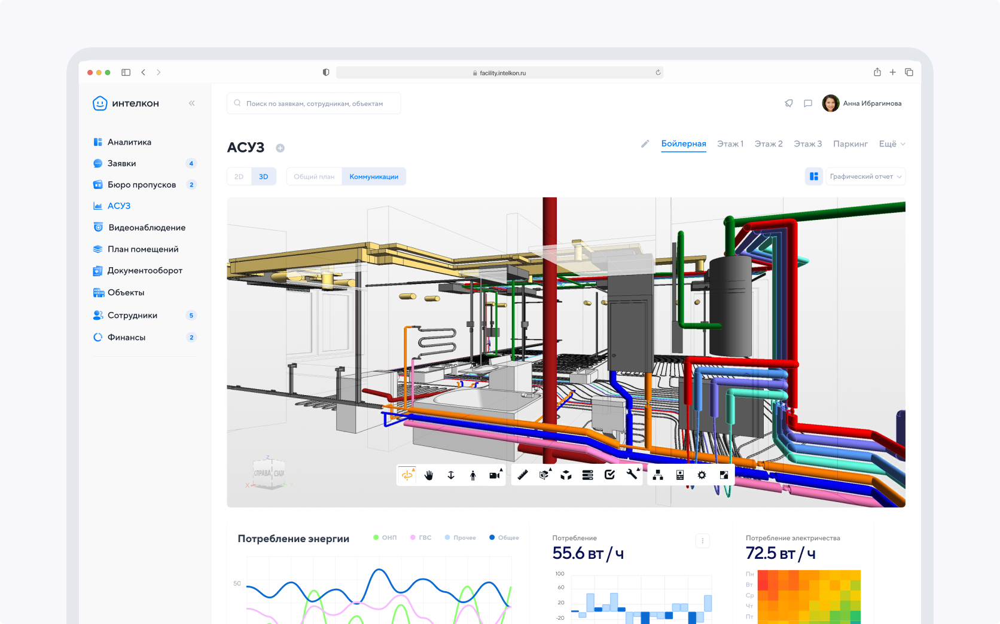
Редизайн приложения жильцов
Отдельно обновил интерфейс iOS-приложения для жильцов. Приложение уже использовалось пользователями и закрывало базовые сценарии взаимодействия с инфраструктурой дома: домофония, камеры, сообщения и управление доступом.
Я переработал структуру экранов, типографику, отступы и компоненты, сделав интерфейс визуально легче и чище без изменений ключевых пользовательских сценариев.
Основные сценарии — открытие дверей и ворот, просмотр камер и управление инфраструктурой дома — были собраны на одной главной странице. Это сократило количество переходов между разделами и сделало ключевые действия доступными сразу после открытия приложения.
Главная и чаты iOS
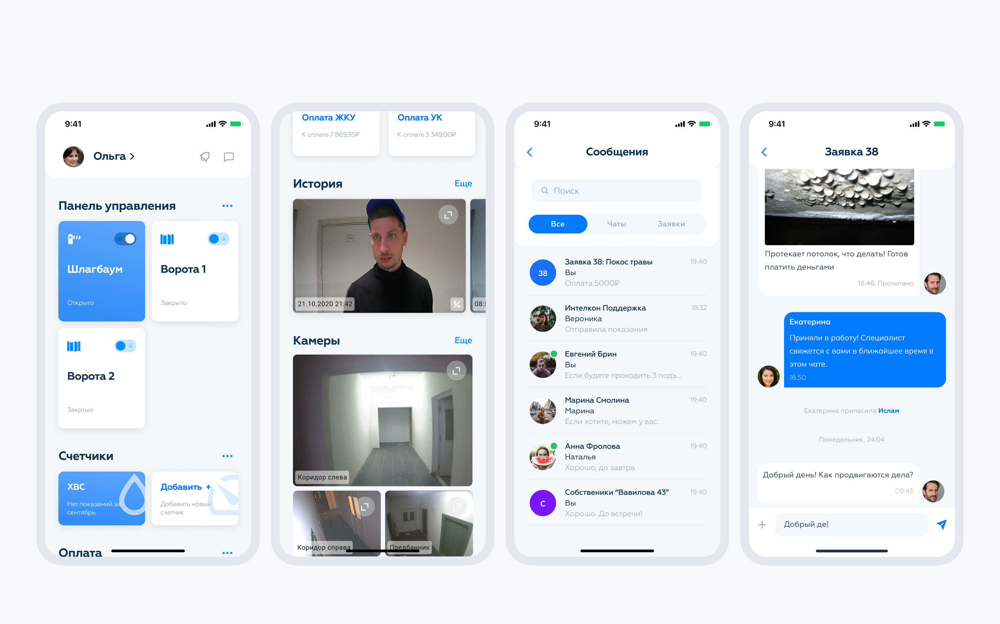
Чаты и уведомления переехали в верхнюю часть интерфейса по аналогии с веб-платформой для сотрудников. Такой подход помог унифицировать паттерны взаимодействия внутри экосистемы продукта и освободить tab bar под дальнейшее развитие приложения.
В roadmap приложение постепенно должно было развиваться от «пульта управления домом» в сторону полноценной сервисной платформы для жильцов: с магазином услуг, управлением IoT-устройствами и дополнительными домашними сценариями.
Айдентика и визуальный язык
По мере развития продукта стало заметно, что визуальный образ компании начал расходиться с самим продуктом. Платформа постепенно уходила от «софта для домофонии» в сторону полноценной proptech/SaaS-системы с веб-интерфейсами, мобильными приложениями, аналитикой и сложными сервисными сценариями.
В рамках редизайна я обновил логотип, сохранив преемственность с предыдущей версией, но упростив форму и визуальный язык. Новая версия стала проще и легче визуально: уменьшилось количество деталей, смягчилась форма, изменилась типографика.
Логотип до и после
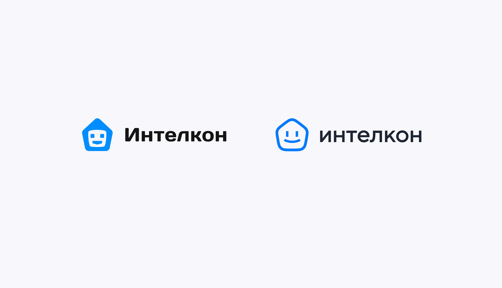
Обновлённый визуальный стиль начал использоваться не только внутри продукта, но и во внешних коммуникациях компании — презентациях, лендингах и коммерческих материалах для продаж.
По запросу sales-команды визуальный язык выстраивался вокруг баланса между «дружелюбным» и «корпоративным» образом: интерфейсы и материалы должны были выглядеть современно и технологично, но при этом оставаться достаточно строгими для B2B-коммуникации с управляющими компаниями, девелоперами и партнёрами.
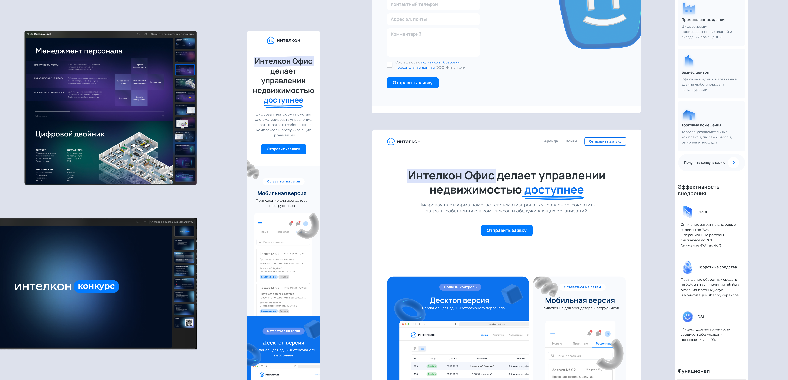
Расширение роли
Внутри hardware-направления не было выделенного промышленного дизайнера — визуальные решения для устройств обычно собирались инженерами.
В какой-то момент мне поставили задачу собрать концепт PLC-модуля для демонстрации потенциального развития hardware-линейки компании. Я разработал визуальный концепт устройства с акцентом на более современный и цельный digital-first образ, синхронизированный с новым визуальным языком платформы.
Концепт PLC-модуля и продовый дизайн домофона с реализацией
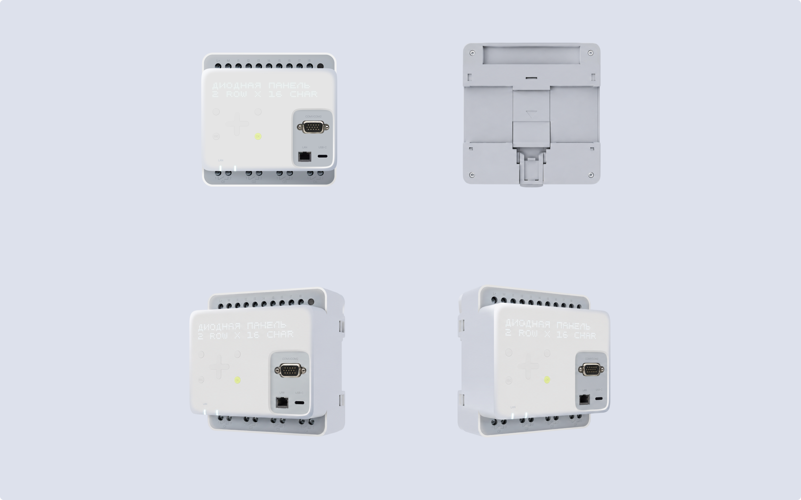
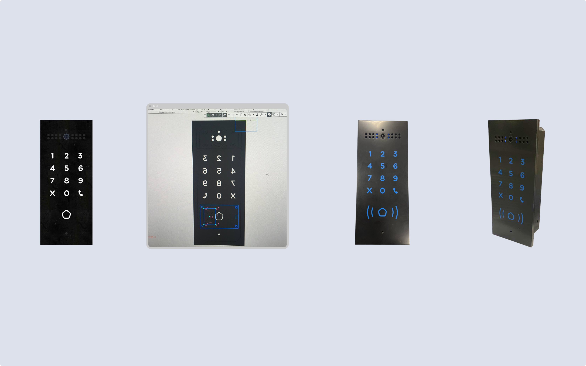
После этого hardware-команда начала подключать меня уже к реальным устройствам. Для нового домофона мне передали технические ограничения, размеры внутренней начинки и требования по производству, после чего я самостоятельно спроектировал внешний вид устройства.
Обновлённый логотип благодаря своей простой и универсальной форме ненавязчиво интегрировался в физические устройства — в том числе стал частью визуального сценария самого домофона. В итоге дизайн устройства практически без изменений ушёл в производство.
Результаты работы
За полтора года работы над проектом я участвовал в развитии продукта на нескольких уровнях одновременно: от UX ключевых сценариев и запуска MVP до формирования визуального языка платформы и hardware-направления.
Вместе с командой мы перевели продукт на новую архитектуру и в сжатые сроки запустили мобильный MVP, который позволил быстро начать работу с пользователями и собирать обратную связь из реальных сценариев использования.
За время работы я:
- участвовал в исследовании пользовательских сценариев и глубинных интервью
- проектировал и тестировал MVP мобильной платформы
- переработал ключевые операционные сценарии системы
- внедрил process-driven подход к работе с заявками через kanban-представление
- участвовал в проработке новых R&D-направлений платформы
- обновил визуальную систему продукта и связанные маркетинговые материалы
- разработал дизайн домофона, позже реализованный в производстве
По мере роста продукта моя роль постепенно расширялась от проектирования интерфейсов до участия в формировании новых сервисов, пользовательских сценариев и общего направления развития экосистемы продукта.